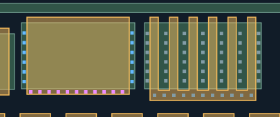
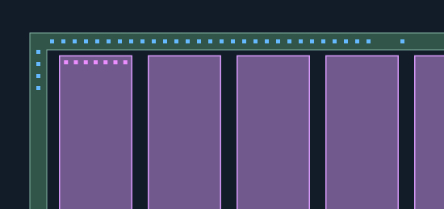
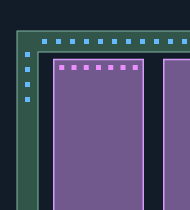

蓝色：新增AA接触；紫色：新增POLY接触；灰蓝：已审RIGHT6，保持不变、不重复验收。 新孔均有照片观察支持，采用局部材料对应，未使用全幅盲投影。AA/POLY材料未修改。
仅重建下列局部观察支持的孔列；未补齐缺少证据的位置，未画不代表没有孔。 新区域的材料对应仍为AI候选，孔数不是人工确认值。几何检查不是真实工艺DRC，M1归属未知。 整体质量门与防退化检查 · 匹配与未选择观察记录
核对宽栅两侧源漏孔与下端栅CT；右侧灰蓝RIGHT6为已审背景，不重复验收。

核对环的顶部及左侧观测支持部分；不将环内电阻端部孔归入环，也不宣称整圈孔已完整。

核对第一条电阻上端POLY接触，旁边环孔分开显示；未处理电阻底端或其余17条电阻。
